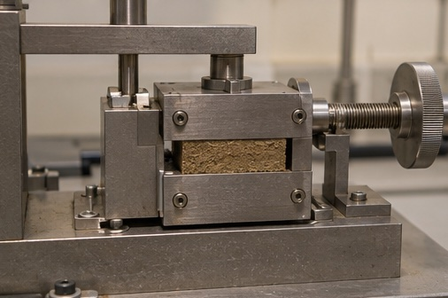
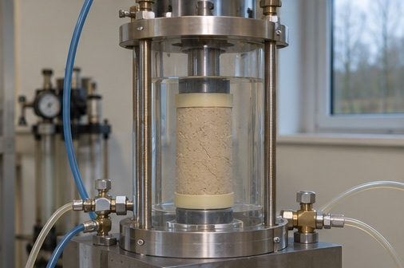

Fra forsøg til brudlinje
Jords forskydningsstyrke
Brug to idealiserede brudmålinger fra en skæreboks til at finde en brudlinje. Sammenhold linjen med en triaksialprøves Mohr-cirkel ved samme sæt effektive styrkeparametre.
Indstillinger
I skæreboksen holdes den effektive normalspænding σ′n fast ved 50 eller 150 kPa. De to skydere ændrer forskydningsspændingen τf ved brud.
Principskitse og resultater
Symboler og enheder
- forskydningsspænding ved brud (kPa)
- effektiv normalspænding på brudplanet ved brud (kPa). Lærebogens σ′f er den fastholdte σ′n i skæreboksforsøget.
- effektiv kohæsion (kPa)
- effektiv friktionsvinkel (°)
- udrænet forskydningsstyrke (kPa)
- cirklens centrum på normalspændingsaksen (kPa)
- cirklens radius (kPa)
- største effektive hovedspænding (kPa)
- mindste effektive hovedspænding (kPa)
Vis beregningen for hvert dellag
Ligninger
Drænet Mohr–Coulomb-brudlinje
Udrænet styrke i ler, totalspændinger
Mohr-cirklens centrum
Mohr-cirklens radius
Undersøg selv
Hæv begge skæreboksmålinger med det samme antal kPa. Hvad sker der med friktionsvinklen og kohæsionen?
Se forklaringen
Hældningen og friktionsvinklen bevares. Skæringen med τ-aksen flytter sig op med det samme antal kPa.
Forudsætninger
De to skæreboksforsøg er drænede med effektive normalspændinger på 50 og 150 kPa. Triaksialforsøget vises med effektive hovedspændinger. Målingerne er konstrueret til øvelsen.


Læs videre i lærebogen
Geoteknik, 3. udgave
Kapitel 7 · Jords styrke, §§ 7.1–7.4, s. 179–188.